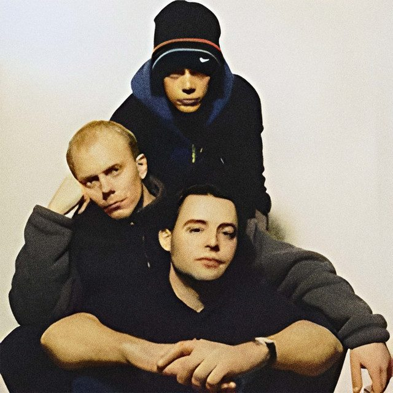

Aquasky [Audio]: Showing down under it's 'This Way Up'


STREAMING AUDIO INTERVIEW
They’re one of the finest breakbeat acts to have emerged from the UK, and since dropping the clunky ‘vs Masterblaster’ part of their name – which, rather confusingly, gave the impression the trio were in fact a duo… – they’ve continued their ascendance on the underground scene.
Initially making their name in drum & bass circles, around the turn of the century they dropped the tempo on their productions and instantly found favour amongst the ‘nu skool breaks’ scene. They’ve now clocked in over 10 years in dance music, and in 2007 Aquasky will release their anticipated new album, ‘This Way Up’. The trio – comprised of Kieron Bailey, Dave Wallace and Brent Newitt – have worked with a staggering list of industry professionals over their career, including Freq Nasty, The Breakfastaz, Meat Katie and Sinden.
With several Australian tours under their belt – including their memorable closing set at the first ever 360 event in Sydney back in 2004 – the trio are heading back down under in October for a run of shows around the country.
Aquasky tour Australia throughout October, check it!
Fri 12th Oct – Ambar, Perth
Sat 13th Oct – GPO, Brisbane
Fri 19th Oct – Chinese Laundry, Sydney
Sat 20th Oct – Revolver, Melbourne
Wed 24th Oct – Halo, Hobart
Fri 26th Oct – Stonefest, Canberra
Sat 27th Oct – Mojo West, Adelaide
Peep this clip of the Aquasky ‘Teamplayers’ live band, featuring the Ragga Twins and Ban Jyang, rehearsing their track ‘Hooligan 69’. It’s all live baby, no computers!